Project 4: Neural Radiance Field (NeRF)
Overview
This project investigates Neural Radiance Fields (NeRF), an innovative method for representing 3D scenes and generating novel viewpoints. NeRF leverages a neural network to model a continuous volumetric scene, mapping 3D spatial coordinates and viewing directions to corresponding color and density values. By applying inverse rendering techniques to calibrated multi-view images, we can train the network to produce renderings from unseen perspectives.
Part 0: Calibrating Your Camera and Capturing a 3D Scan
Part 0.1: Calibrating Your Camera
The first step in building a NeRF is to calibrate the camera to understand its intrinsic parameters (focal length, principal point) and distortion coefficients. We use ArUco tags, which are visual tracking targets that provide reliable detection of 3D keypoints across different images.
Calibration Pipeline
- Image Capture: Captured 30-50 images of ArUco calibration tags from various angles and distances, keeping the zoom level constant.
- Tag Detection: Used OpenCV's ArUco detector to find tags in each image and extract corner coordinates.
- 3D-2D Correspondence: Established correspondences between detected 2D corners and known 3D world coordinates (assuming the tag is the world origin, with corners at known physical dimensions).
- Calibration: Used
cv2.calibrateCamera()to compute camera intrinsics matrix
The calibration process handles cases where tags aren't detected in some images by skipping those images and only using successful detections. This robustness is crucial for real-world data collection.
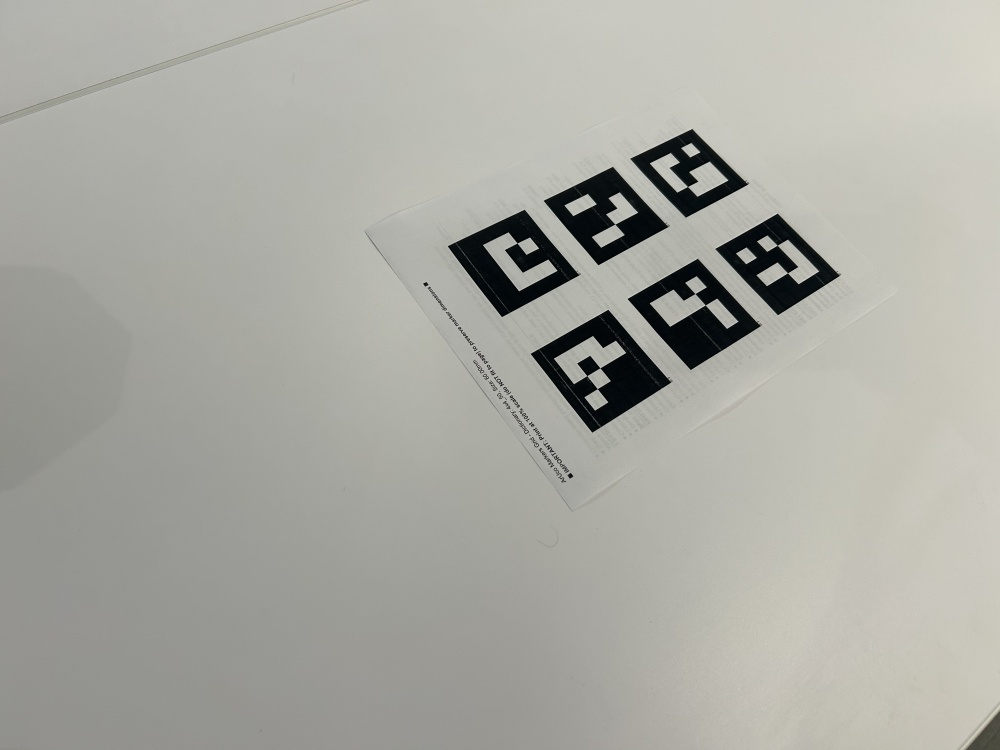
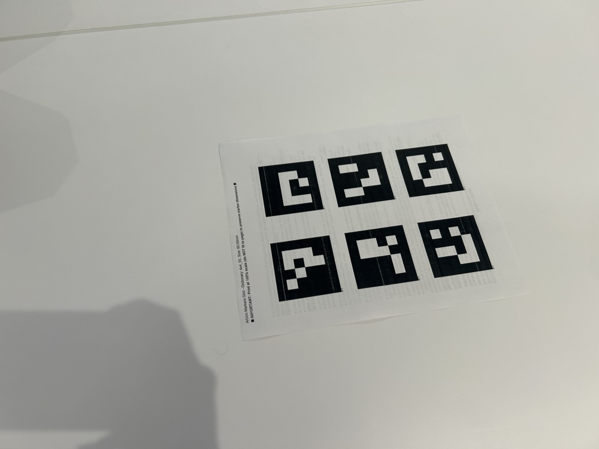
Part 0.2: Capturing a 3D Object Scan
For this project, I captured a 3D scan of a portable charger using a single ArUco tag placed next to the object. I captured 40 images from different angles, following best practices:
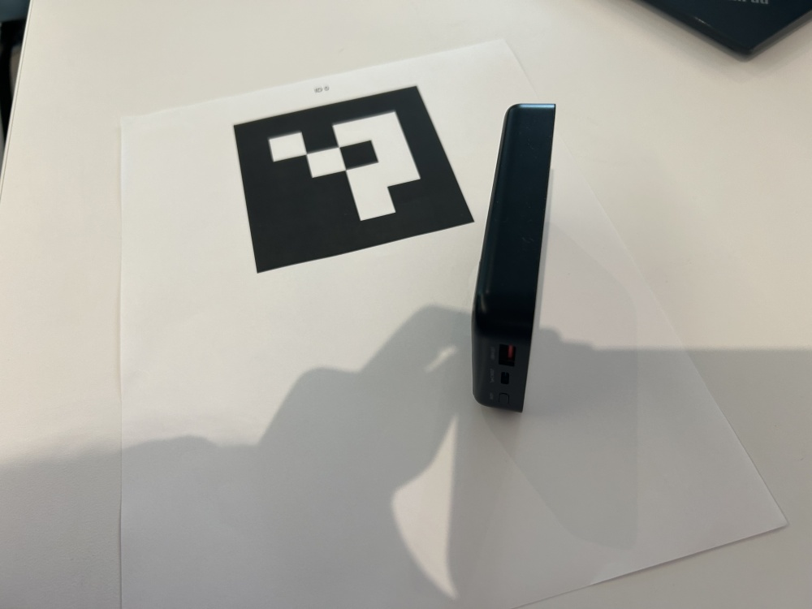
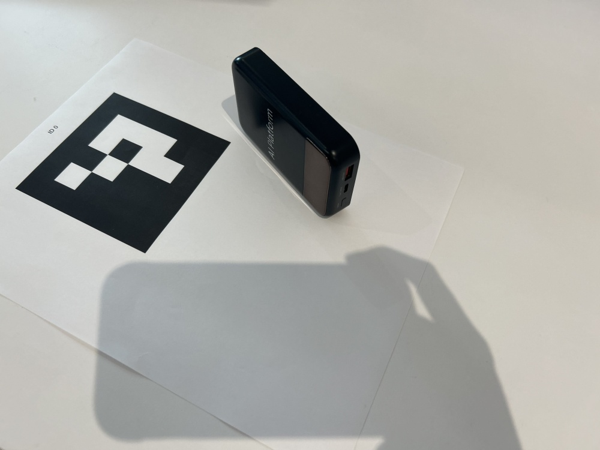
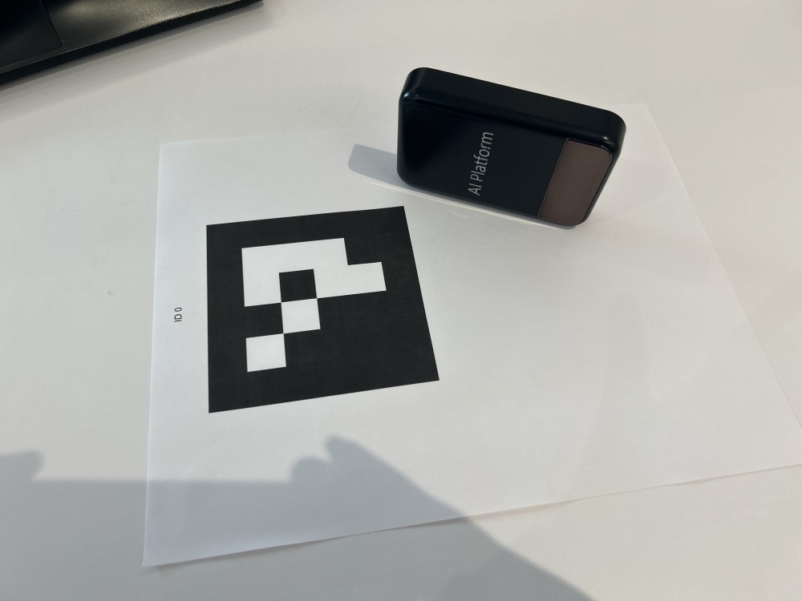
Part 0.3: Estimating Camera Pose
With calibrated camera intrinsics, I estimated the camera pose (position and orientation) for each image using the Perspective-n-Point (PnP) problem. For each image, I:
- Detected the ArUco tag using
cv2.aruco.detectMarkers() - Used
cv2.solvePnP()to estimate the camera's extrinsic parameters (rotation and translation) relative to the tag's coordinate system - Converted the world-to-camera transformation to camera-to-world (c2w) for visualization and NeRF training
PnP Problem
Given 3D points in world coordinates and their 2D
projections in an image, PnP solves for the
camera's pose. The transformation from world to camera
coordinates is:
Part 0.4: Camera Frustum Visualization
I visualized the camera poses using Viser, which shows the camera frustums and their positions in 3D space. This visualization helps verify that the pose estimation is correct and that cameras are distributed well around the object.
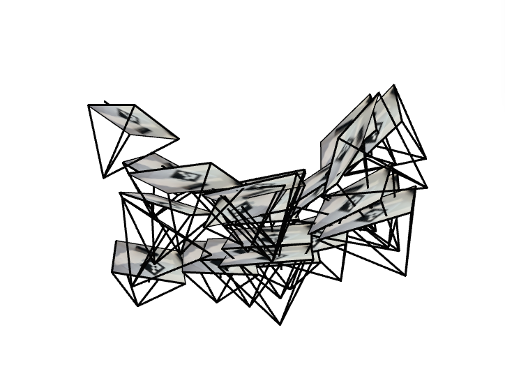
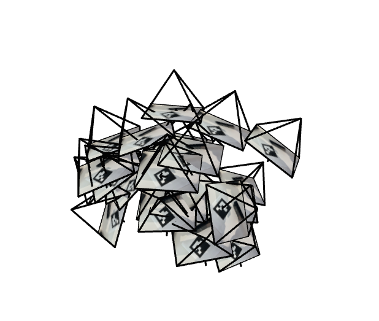
Part 0.5: Undistorting Images and Creating Dataset
Before training, I undistorted all images with
cv2.undistort() to remove lens
distortion, as NeRF assumes a pinhole camera. I
handled black boundaries that can
appear after undistort by using
cv2.getOptimalNewCameraMatrix() and updating the
principal point to account for any cropping.
Note: I resized the calibration images to be under 1000 px, so I had to do the same for object images in all parts of the project to ensure consistency.
We save the dataset as a npz file. It contains
images_train: Training images (N_train, H, W, 3) in 0-255 rangec2ws_train: Camera-to-world transformation matrices (N_train, 4, 4)images_val: Validation images (N_val, H, W, 3)c2ws_val: Validation camera poses (N_val, 4, 4)c2ws_test: Test camera poses for novel view rendering (N_test, 4, 4)focal: Camera focal length (float)
Part 1: Fit a Neural Field to a 2D Image
Before tackling 3D NeRF, we can tacke the 2D problem: fitting a neural field to represent a single 2D image. This helps us understand the core concepts of neural fields, positional encoding, and the training process.
Network Architecture
Model Architecture
- Input: 2D pixel coordinates (x, y) normalized to [0, 1]
- Positional Encoding: Sinusoidal
encoding with max frequency
- MLP Structure:
- Input layer: 42 → 256
- Hidden layers: 256 → 256 (4 layers)
- Output layer: 256 → 3 (RGB)
- Activation: ReLU for hidden layers, Sigmoid for output
- Learning Rate: 1e-2
- Optimizer: Adam
- Batch Size: 10,000 pixels per iteration
- Training Iterations: 2000-3000
Sinusoidal Positional Encoding
Positional encoding expands the input dimensionality using
sinusoidal functions:
This encoding helps the network learn high-frequency details in the image, which is crucial for representing fine textures and edges.
Training on Provided Test Image
I trained the neural field on the provided fox image. The
training progression shows how the network
gradually learns to represent the image: these images use a
network width of 256 and max frequency
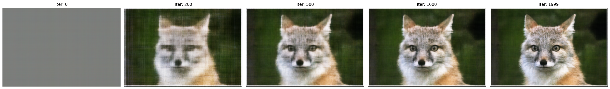
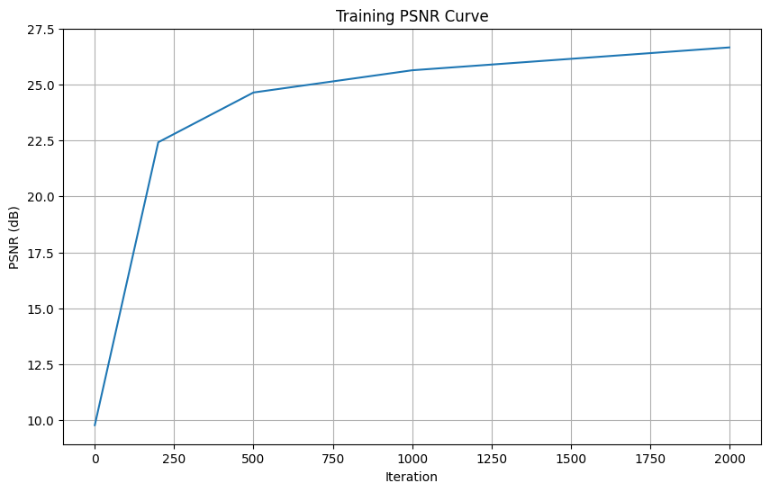
The network starts with random noise and then learns the image structure. Earlier iterations capture low-frequency content like colors and shapes. The high-frequency details are captured as the model progresses.
Training on Custom Image
I also trained the network on an image of my guinea pig. The training progression
shows similar behavior for 256 width and
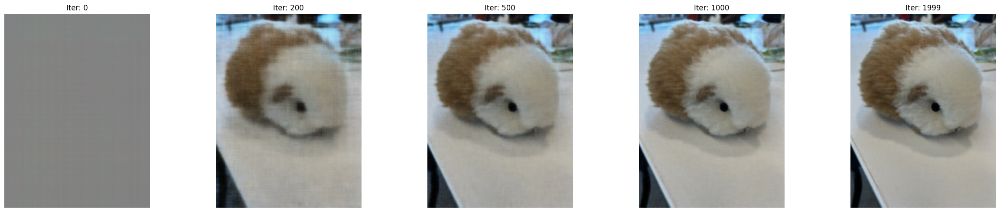
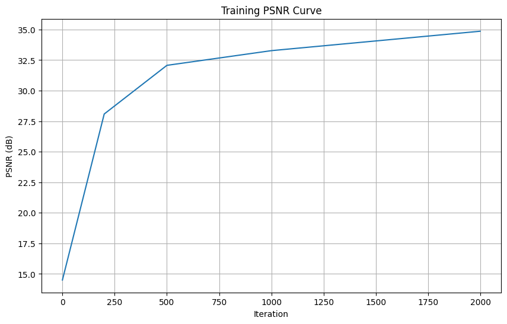
Hyperparameters
Hyperparameter Grid
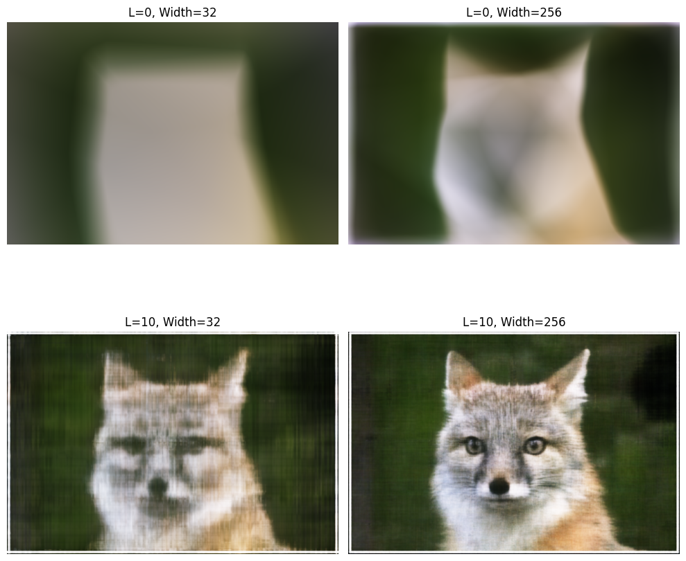
- Wide network (Width=256): This wide net allows learning of complex patterns and fine details.
PSNR Training Curve
Peak Signal-to-Noise Ratio (PSNR) measures reconstruction
quality. For normalized images [0, 1], PSNR is
computed as:


The PSNR curves show rapid improvement in early iterations, then gradual refinement. The network converges to high PSNR values (typically 25-30 dB for good reconstructions), indicating successful learning of the image representation.
Part 2: Fit a Neural Radiance Field from Multi-view Images
Now we extend the neural field to 3D, creating a Neural Radiance Field. NERFs can represent a 3D scene from multi-view images.
Part 2.1: Creating Rays from Cameras
Camera to World Coordinate Conversion
The camera-to-world (c2w) transformation matrix converts points
from camera space to world space:
Pixel to Camera Coordinate Conversion
For a pinhole camera with intrinsic matrix
Pixel to Ray
A ray is defined by an origin
- Ray origin: The camera position in world
coordinates, which is the translation
component of the c2w matrix:
- Ray direction: Convert the pixel to a 3D
point in camera space, transform to world
space, then normalize:
Part 2.2: Sampling
Sampling Rays from Images
Similar to Part 1, we randomly sample pixels (and thus rays)
from the training images. At each
iteration, I sample
Sampling Points along Rays
Each ray is discretized into samples along its length. I use
uniform sampling between near and far
planes:
To prevent overfitting and ensure all locations along the ray
are explored during training, I add small
random perturbations to the sample positions:
Sampling Parameters
- Near plane: 2.0 (for Lego scene)
- Far plane: 6.0 (for Lego scene)
- Number of samples: 32-64 per ray
- Perturbation: Random offset within each interval during training
Part 2.3: Ray and Sample Visualization
I visualized the rays and samples to verify the implementation. The visualization shows cameras, sampled rays, and 3D sample points:


Part 2.4: Neural Radiance Field Network
NeRF Network Architecture
- Input:
- 3D coordinates
- View direction
- 3D coordinates
- MLP Structure:
- Input layer: 60 → 256 (60 = 3 + 3×2×10 for position encoding)
- Hidden layers: 256 → 256 (8 layers)
- Density head: 256 → 1 (with ReLU to ensure non-negative density)
- Feature layer: 256 → 256
- View-dependent color head: 256 + 27 → 128 → 3 (27 = 3 + 3×2×4 for view encoding, output with Sigmoid)
- Skip Connections: Input (after PE) is concatenated to the 4th hidden layer to help the network remember input features
- Outputs:
- Density
- Color
- Density
Key Design Choices
- View-dependent color: The color depends on both position and viewing direction, enabling realistic view-dependent effects like specular highlights.
- Skip connections: Injecting the encoded input into the middle of the network helps prevent the network from "forgetting" the input coordinates, which is important for deep networks.
- Separate encoding frequencies: Position uses higher frequency encoding (L=10) to capture fine geometric details, while view direction uses lower frequency (L=4) since view effects are typically smoother.
Part 2.5: Volume Rendering
Volume rendering composites the colors and densities along each
ray to produce the final pixel color.
The continuous volume rendering equation is:
The discrete approximation used in practice is:
Part 2.6: Training on Lego Dataset
I trained the NeRF on the provided Lego dataset (200×200 resolution, 100 training images). Training parameters:
- Batch size: 10,000 rays per iteration
- Learning rate: 5e-4
- Optimizer: Adam
- Number of samples per ray: 64
- Training iterations: 1000
Training Progression
The network gradually learns to represent the 3D scene. Early iterations show blurry, low-frequency reconstructions, while later iterations capture fine details:


Validation Set Results
Validation images show how well the NeRF generalizes to unseen camera poses:


PSNR on Validation Set

The validation PSNR reaches above 23 dB, meeting the project requirements. The loss decreases consistently, and the PSNR improves steadily, indicating successful training.
Novel View Synthesis
After training, I rendered novel views using the test camera poses. The NeRF successfully synthesizes photorealistic views from arbitrary camera positions:

Spherical Rendering Video
I created a video showing the Lego scene from a spherical camera path, demonstrating smooth novel view synthesis:
Part 2.6: Training with Your Own Data
I trained a NeRF on my own captured dataset (the purple penguin). This required several adjustments from the Lego dataset:
Key Changes for Real Data
- Near/Far Planes: Adjusted from (2.0, 6.0) to (0.02, 0.5) meters to match the scale of my object
- Training Iterations: Trained for 2000 iterations instead to achieve good quality
- Batched Inference: Used batched inference for training to avoid memory errors
Training Progression
The training shows gradual improvement in reconstruction quality:


Validation Results


Training Loss Curve

The training loss decreases steadily, showing successful optimization. The network learns to represent the 3D structure and appearance of the shoe from the multi-view images.
Novel View Rendering
I rendered a circular camera path around the object to create a novel view video:

Rendering Details
The circular path was generated by:
- Starting from a position near the object (derived from training camera poses)
- Rotating the camera around the object while keeping it pointed at the origin
- Rendering 30 frames for a smooth animation
The NeRF successfully synthesizes photorealistic views from these novel camera positions, demonstrating that it has learned a complete 3D representation of the scene. The interesting thing is that the NeRF creates highly accurate reconstructions even for the views where the tag was hidden; those views were not part of the training set.
Conclusion
This project successfully implements a complete NeRF pipeline, from camera calibration and 3D scanning to training and rendering neural radiance fields. Key achievements:
- Camera Calibration: Successfully calibrated camera using ArUco tags and estimated poses for all images
- 2D Neural Fields: Demonstrated neural field representation for 2D images, exploring hyperparameter effects
- 3D NeRF: Implemented full NeRF pipeline with volume rendering, achieving PSNR > 23 dB on validation set
- Novel View Synthesis: Successfully rendered photorealistic novel views from arbitrary camera positions
- Real Data: Trained NeRF on custom captured dataset, demonstrating the pipeline's applicability to real-world scenarios
The project demonstrates the power of neural radiance fields for 3D scene representation and novel view synthesis. The learned implicit representation captures both geometry and appearance, enabling photorealistic rendering from any viewpoint.